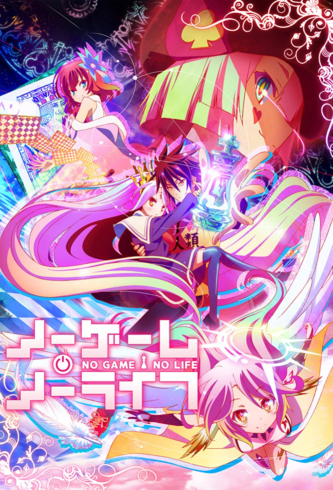
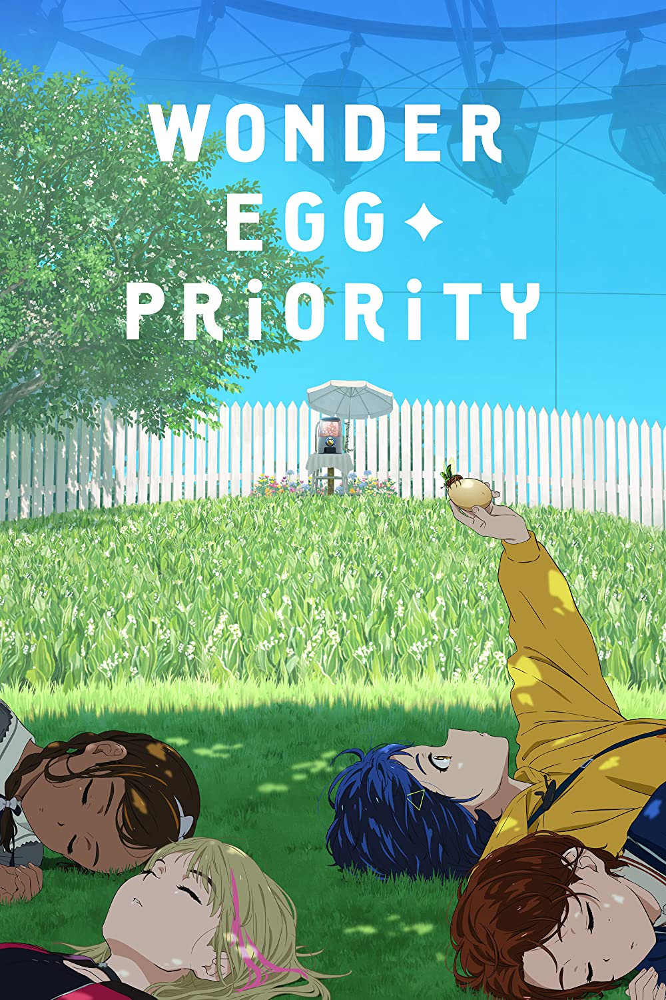
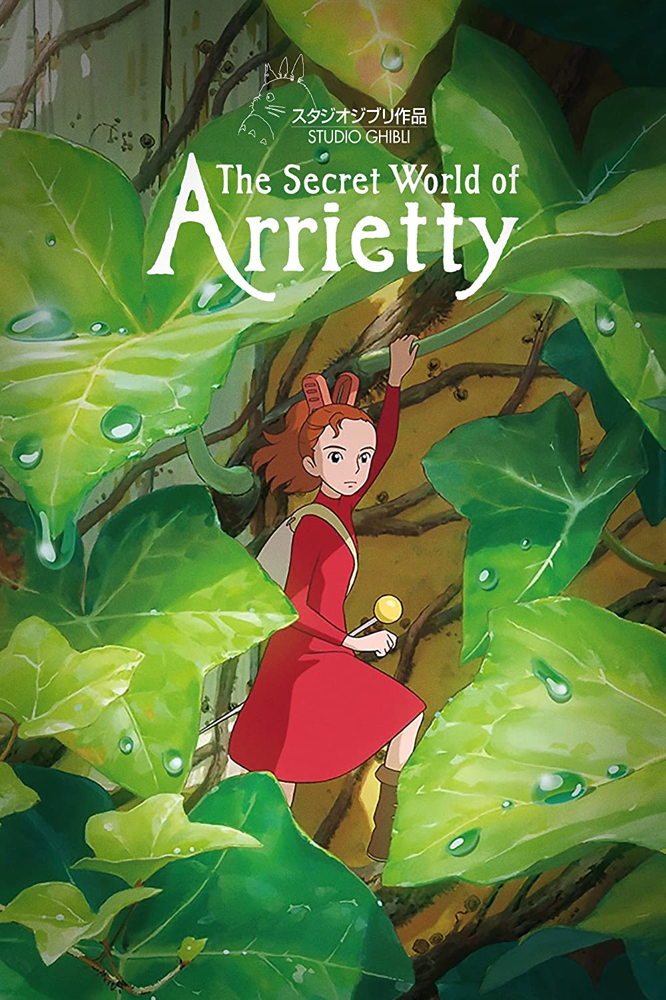

No Game No Life
TV (12 eps)
An urban legend states that those exceptionally gifted at gaming will be sent a special game invitation, and the winners of the challenge will be whisked away to another world. When Sora and Shiro, two hikikomori NEETs who happen to be both siblings and notorious gamers, receive this invitation, they defeat it with ease. And like the legends tell, they're transported to another world where conflicts, peoples' lives and even country borders are decided by competitions and games. Always up for a challenge, the pair quickly take on the obstacles that come their way, whether it be restoring lowly humanity's good name compared with the other races or helping influence who will become the next king.
Source: Anime-Planet
 My Neighbor Totoro
My Neighbor Totoro
Movie (1 ep x 86 min)
Satsuki, her younger sister Mei and their father have just moved to their new home in the countryside, where grand adventures await them. One day while playing outside in the garden Mei encounters a small creature and decides to follow it. After chasing it through the bushes Mei eventually finds herself at the base of a large Camphor tree and as she drops through a hole in its roots, she lands on the stomach of a large, sleeping forest spirit named Totoro. The two sisters befriend the gentle spirit and are soon introduced to a world more fantastical than they could ever imagine, from playing with soot spirits to meeting a Catbus, to flying through the air and even making the trees grow. However when Mei disappears, Satsuki must call on the help of her new friends if she wants any hope of being able to find her sister...
Source: Anime-Planet

Wonder Egg Priority
TV (12 eps)
Following the suicide of her best and only friend, Koito Nagase, Ai Ooto is left grappling with her new reality. With nothing left to live for, she follows the instructions of a mysterious entity and gets roped into purchasing an egg, or specifically, a Wonder Egg. Upon breaking the egg in a world that materializes during her sleep, Ai is tasked with saving people from the adversities that come their way. In doing so, she believes that she has moved one step closer to saving her best friend. With this dangerous yet tempting opportunity in the palms of her hands, Ai enters a place where she must recognize the relationship between other people's demons and her own. As past trauma, unforgettable regrets, and innate fears hatch in the bizarre world of Wonder Egg Priority, a young girl discovers the different inner struggles tormenting humankind and rescues them from their worst fears.
Source: MyAnimeList

The Secret World of Arrietty
Movie (1 ep x 94 min)
For nearly fourteen years, Arrietty has lived with her parents under the floorboards of a house. As 'tiny people', the family must remain hidden from humans, 'borrowing' items from them such as postage stamps or herbs to cook with. Arrietty is old enough to borrow for the first time, and alongside her father, the two explore the house in search of tissue and sugar. But when the pair is spotted by Sho, a boy who is visiting his great aunt, Arrietty's parents fear for their safety. However, unlike her family, Arrietty is convinced that not all humans are dangerous, and together she and Sho form an unlikely friendship.
An adaptation of The Borrowers by Mary Norton